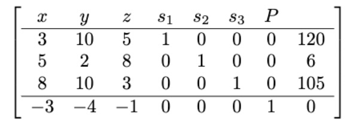
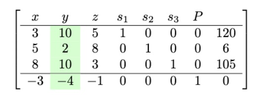
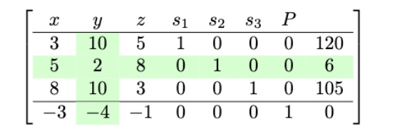
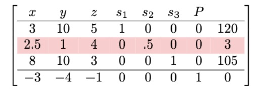
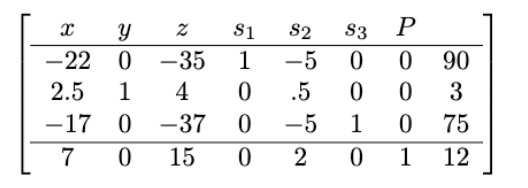

6 The Simplex Method
6.1 Introduction to Simplex Method
As stated earlier, Linear Programming is one of the most commonly used methods for solving practical problems in business and even in government. However, the problems we have considered so far had a maximum of two products and relatively small feasible regions and few corner points. Many real life problems often involve much more products and result in very big feasible regions with hundreds or even thousands of corner points.
The simplex method provides a more general method of solving LP programs without relying on a physical feasible region. Consider the following LP problem through which we will discuss the details of the simplex method:
Example 1
A factory manufactures chairs, tables and bookcases each requiring the use of three operations: Cutting, Assembly, and Finishing. The first operation can be used at most 600 hours; the second at most 500 hours; and the third at most 300 hours. A chair requires 1 hour of cutting, 1 hour of assembly, and 1 hour of finishing; a table needs 1 hour of cutting, 2 hours of assembly, and 1 hour of finishing; and a bookcase requires 3 hours of cutting, 1 hour of assembly, and 1 hour of finishing. If the profit is $20 per unit for a chair, $30 for a table, and $25 for a bookcase, how many units of each should be manufactured to maximize profit?
Let us start by creating a mixture chart for the problem:
| Products | Resource: Cutting(600hrs) |
Resource: Assembly(500hrs) |
Resource: Finishing(300hrs) |
Profit ($) |
|---|---|---|---|---|
| Chairs | 1 | 1 | 1 | 20 |
| Tables | 1 | 2 | 1 | 30 |
| Bookcases | 3 | 1 | 1 | 25 |
Next, we make the constraint inequalities assuming that the company makes \(x\) chairs, \(y\) tables, and \(z\) bookcases. Note that using \(x,y\), and \(z\) is not advisable when you have more than 3 variables. It is recommended you use \(x_1, x_2, x_3,...\)
Minimum constraints:
Chairs: \(x\ge 0\)
Tables: \(y\ge 0\)
Bookcases: \(z\ge 0\).
Resource constraints:
For cutting: \(x+y+3z\le600\)
For assembly: \(x+2y+z\le500\)
For finishing: \(x+y+z\le300\)
Things to Note
- Unlike the problems encountered in the previous chapter, this problem includes 3 variables \((x,y, z).\) This means that, we would have to create a three dimensional graph to visualize the feasible region- a task that is impossible for humans to execute by hand.
- Most application problems include way more than 3 variables, which means we would need a multidimensional graph to visualize the feasible region.
- The simplex method provides an algorithmic method that solves this type of problems without needing to create a visual feasible region. The method can also be used to solve problems in the previous chapter.
- The technical details of the simplex method are beyond the scope of the course but the algorithm itself is relatively easy to execute once you learn it.
You should try this problem on your own (see exercises) once you have understood the simplex method. For now, the step-by-step procedure of the simplex algorithm is presented.
6.2 Step-by-Step Simplex Method
We want to walk through the simplex method step-by-step until we find an optimal production policy and the maximum profit.
Consider the example below:
Example 2
Maximize the function \(P=3x+4y+z\) subject to the conditions
\[3x+10y+5z \le 120 \] \[5x+2y+8z \le 6\] \[8x+10y+3z \le 105\]
Problem Posing: Note that this problem does not have a real world context, before you proceed, please write a real life LP problem that might suit the given profit function and constraints.
Step 1:
Convert the inequalities to equations by adding slack variables and rewrite the profit function so that the constant value is on the right hand side of the equation: \[3x+10y+5z+s_1 = 120 \] \[5x+2y+8z +s_2= 6\] \[8x+10y+3z +s_3= 105\] \[-3x-4y-z+P\] Slacks allow us to convert inequalities to equations by filling up the amount by which a quantity falls short of another. For example, \(s_1\) is the amount by which the quantity \(3x+10y+5z\) falls short of 120. So, by adding \(s_1\) to \(3x+10y+5z\) we achieve the equality. sh
Step 2:
Create the initial simplex tableau. In the tableu, each equation appears in its own row with the profit function appearing as the last row. See table below:
Step 3:
Choose the pivot column. The most negative entry in the last row is -4 which is in column 2. So, column 2 is our pivot column. See below:

Why do we choose the most negative element in the last row?
The most negative entry in the bottom row represents the largest coefficient in the objective function - the coefficient whose entry will increase the value of the objective function the quickest. Remember this is a maximization problem.
Step 4:
Find the pivot row. To find the pivot row, divide the values on the far right by values of the pivot column. The row with the smallest quotient will be your pivot row. In this case, \[120/10=12\] \[6/2=3\] \[105/110=10.5\] The smallest quotient here is 3, which means the pivot row is row 2. The matrix below highlight the picot row:

Why does the smallest quotient identify a row?
Using the quotients to identify the pivot element guarantees that we do not violate the constraints as we proceed with the algorithm.
Step 5:
The 2 at the intersection of row 2 and column 2 is called a pivot element. We want to perform row operations to make it a 1. To do this, we simply divide the whole of row 2 by 2. This can be represented as \(\frac{1}{2}R_2 \mapsto R_2\). This means that the new row 2 will be half of the previous row 2.
\(\frac{1}{2}\times(5,2,8,0,1,0,0,6)=(2.5,1,4,0,.5,0,0,3)\)
The new tableau becomes,

Step 6:
We perform row operations to convert every entry above and below the new pivot element (1) into a 0. The following operations will achieve this:
- The new row 1 will be the difference between row and and 10 times row 2 i.e., \(R_1 - 10R_2\mapsto R_1\).
- The new row 3 will be the difference between the current row 3 and 10 times row 2.e., \(R_3 - 10R_2\mapsto R_3\).
- The new row 4 will be the current row 4 plus 4 times row 2 i.e., \(R_4 + 4R_2\mapsto R_4\).
We perform the actual computations below:
\(R_1 - 10R_2\mapsto R_1\):
\((3,10,5,1,0,0,0,120) - 10(2.5,1,4,0,0.5,0,0,3)=(-22,0,-35,1,-5,0,0,90)\).
\(R_3 - 10R_2\mapsto R_3\):
\((8,10,3,0,0,1,0,105) - 10(2.5,1,4,0,0.5,0,0,3)=(17,0,-37,0,-5,1,0,75)\).
\(R_4 + 4R_2\mapsto R_4\):
\((-3,-4,-1,0,0,0,1,0) + 4(2.5,1,4,0,0.5,0,0,3)=(7,0,15,0,2,0,1,12)\).
Now we put these new rows into our tableau. See below:

Notice that the last row has no negative numbers. This means we are done and we can directly read our solution. If there were any negative numbers left on the last row, you would have to do the process one more time (i.e., find new pivot column and row then perform subsequent row operations). This process continues until there are no negative numbers on the last row.
Step 7:
Read the solution from the final tableau. Every column with a “1’s” and “0’s” would give us a value for a variable. In our case above,
\(y=3, s_1=90, s_3=75, P=12\)
All the others (i.e., \((x,z,s_2)\)) will be zero.
This solution basically means, make 3 units of product \(y\), and zero product \(x\) and \(z\).
6.2.1 Summary of the Simplex Method
Below is a summary of the simplex method for maximization problems in LP:
- Set up the problem. That is, convert the problem into mathematical terms. This involves creating the constraint inequalities and the objective function.
- Convert the inequalities into equations. This is done by adding one slack variable for each inequality.
- Construct the initial simplex tableau with the objective function as the bottom row. d)Identify the pivot column. The most negative entry in the bottom row identifies the pivot column.
- Calculate the quotients. The smallest quotient identifies a row. The element in the intersection of the column identified in step 4 and the row identified in this step is identified as the pivot element. The quotients are computed by dividing the far right column by the identified column in step 4. A quotient that is a zero, or a negative number, or that has a zero in the denominator, is ignored.
- Perform pivoting to make all other entries in this column zero.
- When there are no more negative entries in the bottom row, we are finished; otherwise, we start again from step (d).
- Read off your answers. Get the variables using the columns with 1 and 0s. All other variables are zero. The maximum value you are looking for appears in the bottom right hand corner.
6.3 A Short Trip Back
Let us use the simplex method to solve example 2 from the previous chapter. For your convenience the example is repeated below:
Example 3
A toy manufacturer can manufacture only skateboards and, only dolls, or some kind of skateboards and dolls. Skateboards require 5 units of plastic and can be sold for a profit of $1.00, while dolls require 2 units of plastic and can be sold for $0.55 profit. Only 60 units of plastic are available. Furthermore, making one skateboard requires 15 person-minutes while making one doll requires 18-person minutes. There are only 360person person-minutes available.
Solution
Recall that we had generated the following resource inequalities:
\(5x+2y\le 60\)
\(15x+18y\le360\) (Simplifies to \(5x+6y\le120\) by dividing through by 3)
We also had the following profit function: \(P=1.00x+0.55y\)
Our first step is to convert the inequalities to equations by adding slack variables and rewriting the profit function:
\(5x+2y+s_1= 60\)
\(5x+6y+s_2=120\)
\(-1x-0.55y+P=0\)
Thus, our initial tableau on which we shall perform row operations is:
\[\begin{bmatrix} x & y & s_1&s_2&P & | \\ \hline 5 & 2 & 1 & 0 & 0 & |& 60 \\ 5 & 6 & 0 & 1 & 0 & | & 120\\ \hline -1 & -0.55 & 0 & 0 & 1 & |& 0 \end{bmatrix}\]Next, we find the pivot element by identifying the pivot column and row.
The most negative entry in the last row is \(-1\) and so the first column is our pivot column:
\[\begin{bmatrix} x & y & s_1&s_2&P & | \\ \hline \color{red}5 & 2 & 1 & 0 & 0 & |& 60 \\ \color{red}5 & 6 & 0 & 1 & 0 & | & 120\\ \hline \color{red}-1 & -0.55 & 0 & 0 & 1 & |& 0 \end{bmatrix}\]To find the pivot row, we compute following quotients : \(\frac{60}{5}=12\); \(\frac{360}{5}=72\). Thus, our pivot row is row 1.
\[\begin{bmatrix} x & y & s_1&s_2&P & | \\ \hline \color{red}\textbf5 & \color{red}2 & \color{red}1 & \color{red}0 & \color{red}0 & |& \color{red}60 \\ \color{red}{5} & 6 & 0 & 1 & 0 & | & 120\\ \hline \color{red}-1 & -0.55 & 0 & 0 & 1 & |& 0 \end{bmatrix}\]Our pivot element is, therefore, the \(5\) in the first row. Next perform row operations to make the element a \(1\). The operation to achieve this goal is \(\frac{1}{5}R_2\) (i.e., we multiply the entire row 2 by one fifth). The new tableau becomes,
\[\begin{bmatrix} x & y & s_1&s_2&P & | \\ \hline \color{red}\textbf{1} & 0.4 & 0.2 & 0 & 0 & |& 12\\ 5 & 6 & 0 & 1 & 0 & | & 120\\ \hline -1 & -0.55 & 0 & 0 & 1 & |& 0 \end{bmatrix}\]Next, we perform row operations that will convert all entries of column 1 (except our pivot element) to 0. Let us start by targeting the 5. The operation \(R_2-5R_1 \mapsto R_2\) (replace row 1 by row 2 minus five times row 1) will achieve our desired goals. See the new tableau below:
\[\begin{bmatrix} x & y & s_1&s_2&P & | \\ \hline \color{red}\textbf{1} & 0.4 & 0.2 & 0 & 0 & |& 12\\ \color{red}\textbf{0} & 4 & -5 & 1 & 0 & | & 60\\ \hline -1 & -0.55 & 0 & 0 & 1 & |& 0 \end{bmatrix}\]Next, we perform the operation \(R_3+R_1 \mapsto R_3\), which achieve the goal of converting the \(-1\) on the last row into a zero. Here is the new tableau:
\[\begin{bmatrix} x & y & s_1&s_2&P & | \\ \hline \color{red}\textbf{1} & 0.4 & 0.2 & 0 & 0 & |& 12\\ \color{red}\textbf{0} & 4 & -5 & 1 & 0 & | & 60\\ \hline \color{red}\textbf{0} & -0.15 & 0.2 & 0 & 1 & |& 12 \end{bmatrix}\]Since the last row still have a negative entry (i.e., \(-1\)), we repeat the process one more time:
Our new pivot column is column 2 and the pivot row is row 2 (you should verify this). Thus, our pivot element is the 4 in row 2.
To convert the 4 into a 1, we perform the operation \(\frac{1}{4}R_2\) (i.e., multiply the entire row by one fourth). Here is the new tableau:
\[\begin{bmatrix} x & y & s_1&s_2&P & | \\ \hline 1 & 0.4 & 0.2 & 0 & 0 & |& 12\\ 0 & \color{red}\textbf{1} & -1.25 & 0.25 & 0 & | & 15\\ \hline 0 & -0.15 & 0.2 & 0 & 1 & |& 12 \end{bmatrix}\]Next, we convert the - 0.15 into 0 by performing the operation \(R_3+0.15R_2\mapsto R_3\). The new tableau becomes,
\[\begin{bmatrix} x & y & s_1&s_2&P & | \\ \hline 1 & 0.4 & 0.2 & 0 & 0 & |& 12\\ 0 & \color{red}\textbf{1} & -1.25 & 0.25 & 0 & | & 15\\ \hline 0 & \color{red}\textbf{0} & 0.0125 & 0.0375 & 1 & |& 14.25 \end{bmatrix}\]Finally, we convert the 0.4 into a 0 by performing the operation \(R_1-0.4R_2\mapsto R_1\). The new tableau becomes:
\[\begin{bmatrix} x & y & s_1&s_2&P & | \\ \hline 1 & \color{red}\textbf{0} & 0.7 & 0.1 & 0 & |& 6\\ 0 & \color{red}\textbf{1} & -1.25 & 0.25 & 0 & | & 15\\ \hline 0 & \color{red}\textbf{0} & 0.0125 & 0.0375 & 1 & |& 14.25 \end{bmatrix}\]Notice now that there is no negative entry on the last row. You can now read off the solutions from the columns with 1’s and 0’s.
\[\begin{align} x&=6\\ y&=15 \end{align}\]Which means that the optimal production policy will be manufacturing 6 skateboards and 15 dolls. The maximum profit will be: \(P=1.00(6)+0.55(15)=\$14.25\).
The profit can also be read off directly from the tableau above since the P column has only 0’s and 1’s.
The above solution is exactly the as the one obtained using the geometric method in the previous chapter.
6.4 Exercises
- Consider the following tableau and answer the questions thereafter. Perform row operations to achieve the the results in (a) to (c):
- Convert the 3 in row 3 into a 1.
- Using the tableau in (a) convert the 1 in row 1 into a 0.
- Convert the -2 in row 4 of the tableau in (b) into a zero.
Find the pivot column, row, and element for the each of the following tableaux:
Create an initial tableau from each of the following set of constraint inequalities and the given profit function:
\(P=x+y\)
\(-x+y\le4\)
\(2x+y\le20\)
\(2x-y\le2\)\(P = 4x_1 + x_3 + x_3\)
\(x_1 + 2x_2 + 3x_3 \le 6\)
\(2x_1 + x_2 + x_3 \le3\)
\(x_1 + x_2 + x_3 \le2\)\(P = 2x_1 + 2x_3 + 5x_3\)
\(x_1 + x_3 \le 2\)
\(x_2 + x_3 \le 4\)
\(x_1 + 2x_3 \le 3\)
For the following tableaus, write the constraint inequalities and the profit function.
- Create the inequalities, profit function, and the initial tableau for the following scenario:
A farmer has 100 acres of land on which she plans to grow wheat and corn. Each acre of wheat requires 4 hours of labor and $20 of capital, and each acre of corn requires 16 hours of labor and $40 of capital. The farmer has at most 800 hours of labor and $2400 of capital available. The profit from an acre of wheat is $80 and from an acre of corn is $100. The farmer needs to maximize her profit.
Solve the following LP problems using the simplex method:
- Maximize \(P=x+y\) subject to:
- Maximize \(P = 4x_1 + x_3 + x_3\) subject to:
- Maximize \(P=x+y\) subject to:
A factory manufactures chairs, tables and bookcases each requiring the use of three operations: Cutting, Assembly, and Finishing. The first operation can be used at most 600 hours; the second at most 500 hours; and the third at most 300 hours. A chair requires 1 hour of cutting, 1 hour of assembly, and 1 hour of finishing; a table needs 1 hour of cutting, 2 hours of assembly, and 1 hour of finishing; and a bookcase requires 3 hours of cutting, 1 hour of assembly, and 1 hour of finishing. If the profit is $20 per unit for a chair, $30 for a table, and $25 for a bookcase, how many units of each should be manufactured to maximize profit?
How many acres of each crop should the farmer in problem 5 above plant to maximize her profit? Use the simplex method and show all the steps.